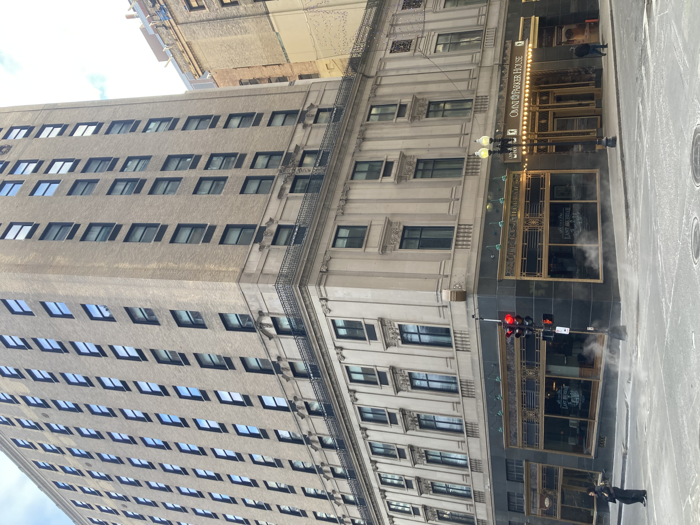
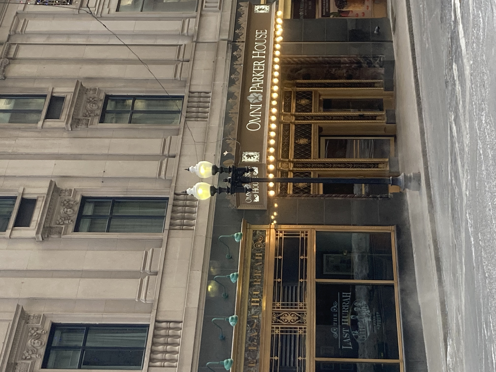
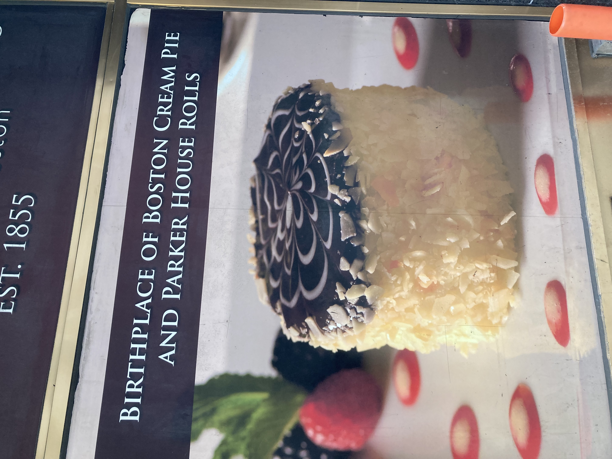
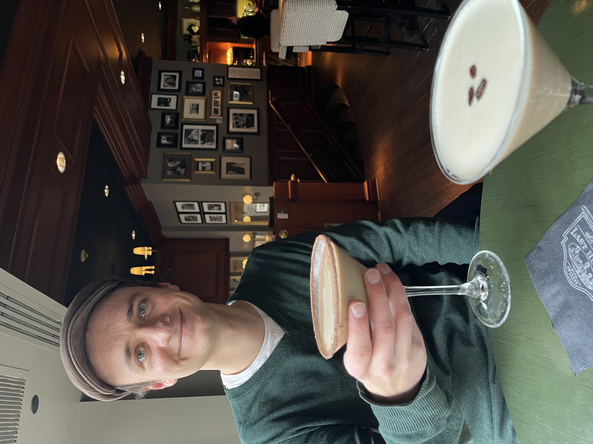
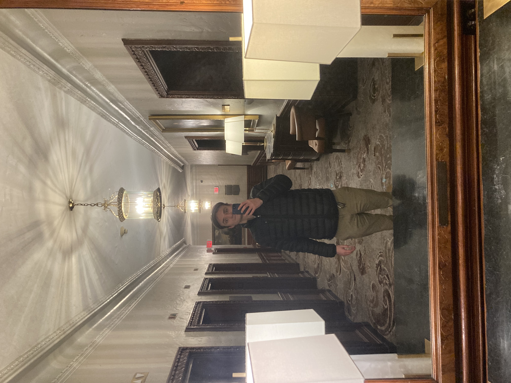
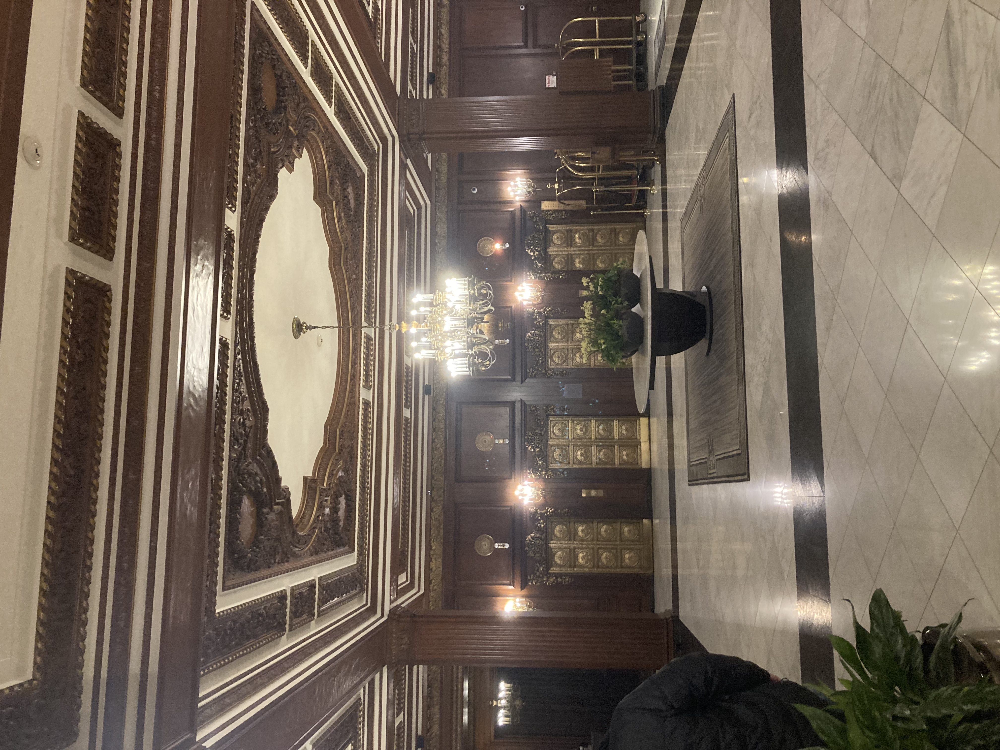

Andrew's Blog
Andrew's Blog



When I think about flâneuring I think about walking around town sharing fun facts about the history, buildings, and culture. You know who else walks around town sharing fun facts about history and local culture?
Ghost tour guides.
When my parents first visited me after moving to Boston, we went on a historic ghost tour with Haunted Boston (not sponsored). It was an excellent spooky tour. More along the lines of true crime and history than paranormal. Although there were a good bit of ghosts too. If you are in Boston, I highly recommend doing a tour with them, especially if you can get the guide named Jarrod (still not sponsored).
When I left a review for this tour, I included the line "I can't wait to share some of these stories to scare my friends." Luckily for all of us, the tour included a stop at not only one of the most historic hotels, but one of the most haunted hotels in the USA, the Omni Parker House!

This place has a crazy history. Opening in 1855, the Omni Parker House is the longest continuously operating hotel in the US. Every US President from Ulysses Grant to Barack Obama stayed at the hotel. JFK (being from Massachusetts) was its biggest presidential visitor, he held two big events at the hotel, his announcement of running for congress and his bachelor party. John Wilkes Booth stayed at the hotel a week before assassinating Lincoln. Both Malcolm X and Ho Chi Minh worked in the hotel. The former as a busboy and the latter as a baker.
It's not just a host to historically significant figures, the hotel has made some historic contributions as well. Most importantly, the Omni Park House restaurant created the Massachusetts state dessert, the Boston Cream Pie. When I visited the hotel this month, I did not have a cream pie. However, I did stop by their cocktail bar, The Last Hurrah, to try a Boston Cream Pie Martini. Yummy!


None of this is very scary so far... I was a little disappointed that going back in the day light without a tour guide made it a lot less ominous. But there are some spooky legends from this hotel. If you are a fan of ghosts, there are two floors you want to stay on, the 3rd or 10th floors.
On floor 10, many guests have reported a similar sighting, a heavyset man in 1800s clothing with big facial hair wandering the halls. Some of these guests have reported the specter to look suspiciously like the portrait of Harvey Parker, the founder of the hotel. Fortunately, he is a friendly ghost, checking on guests and asking them about their stay.
Is the third floor any scarier? A long time resident of the third floor was Charles Dickens. He stayed here during an American reading tour from 1867-1868. The building is perhaps the first place that he shared A Christmas Carol with other people. The mirror he rehearsed in front of is still displayed in the hotel mezzanine. It is said the ghost of Dickens has extended his stay and if you look into the mirror you can still spot him practicing.

As I write this all out, it doesn't sound that scary... This hotel is full of friendly ghosts and cool history! I'll have to stay overnight sometime to see if anything really spooky happens!

Subscribe to the RSS Feed to see more flâneur content!